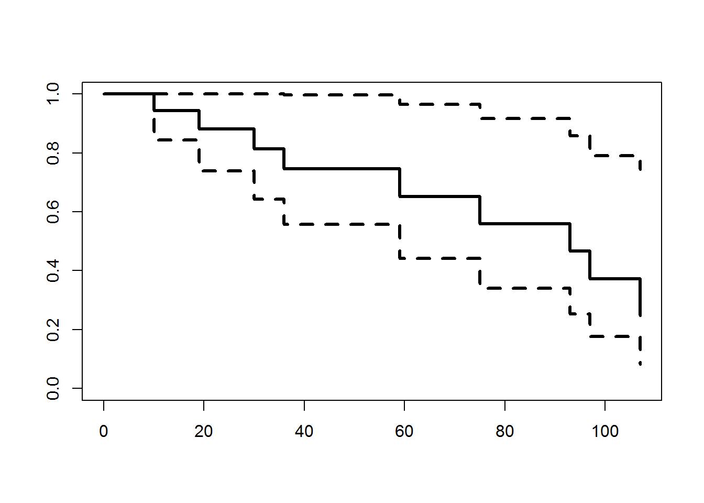
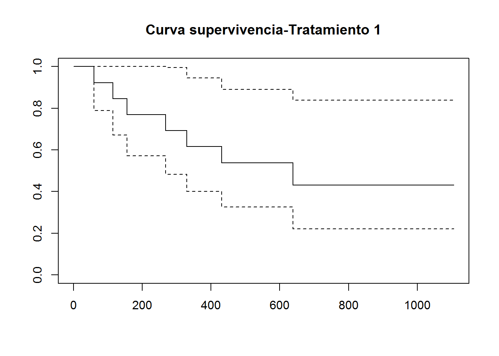
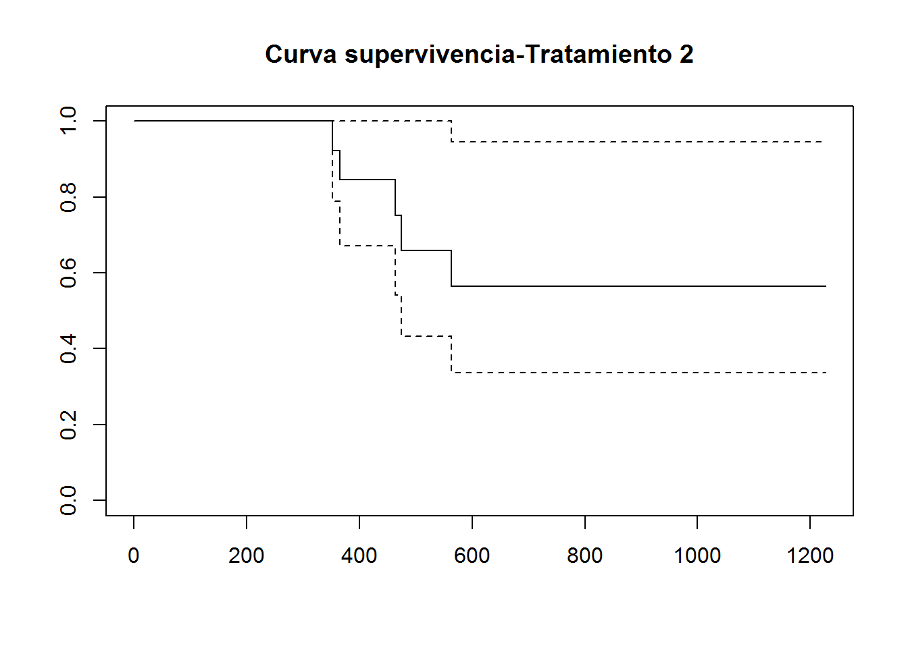
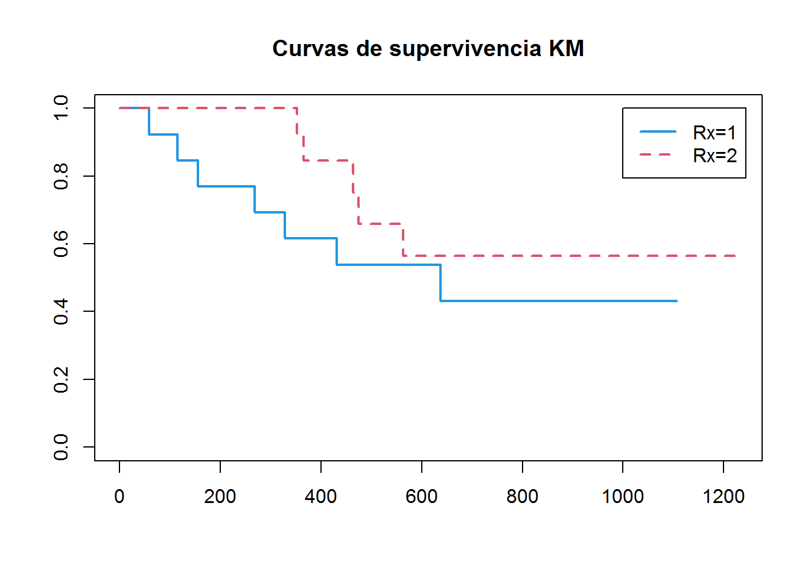

library(survival)
diu<-read.table("dispositivo.txt", header=T)Bioestadística. Máster Universitario en Investigación en Ciencias de la Salud
Práctica 8 - Análisis de supervivencia
En pruebas con anticonceptivos, un criterio evidente de aceptación de dicho anticonceptivo es la prevención de embarazos. Sin embargo, los anticonceptivos modernos muestran tasas de fallo muy bajas, y por tanto las alteraciones en ocurrencia de hemorragias, como amenorrea (una ausencia prolongada de hemorragia), hemorragias irregulares o prolongadas, son importantes a la hora de evaluar un método anticonceptivo.
Para promocionar la investigación en este tema la OMS (WHO) ha proporcionado datos de ensayos clínicos realizadas con distintos tipos de anticonceptivos. Una parte de este conjunto de datos tiene que ver con el tiempo que transcurre desde que una mujer comienza a usar un método particular hasta que suspende su uso.
Los datos que presentamos a continuación corresponden al número de semanas que transcurren desde el comienzo de uso de un dispositivo intrauterino particular (DIU) llamado Multiload 250, hasta que se suspende su uso por problemas de hemorragias. Los datos corresponden a 18 mujeres entre 18 y 35 años que habían experimentado dos embarazos previos.
En este ejemplo el tiempo de origen en que se comienza el estudio es a partir del primer día de uso del DIU y el tiempo final es la suspensión debido a problemas hemorrágicos.
Algunas mujeres suspendieron el uso del DIU porque deseaban quedarse embarazadas mientras que otras simplemente se perdió su seguimiento. Por ello aparecen algunos datos censurados.
Un objetivo de este análisis es resumir la distribución de los tiempos de suspensión del uso del dispositivo intrauterino.
Datos: tiempo en semanas hasta la suspensión de uso del DIU
10, 134+, 18+, 19, 23+, 30, 36, 38+, 54+, 56+, 59, 75, 93, 97, 104+, 107, 107+, 107+
Puedes leer los datos del fichero dispositivo.txt o puedes introducirlos manualmente.
- Estima la función de supervivencia \(S(t)\) por Kaplan-Meier. Calcula los errores estándar y proporciona un I.C. al 95% para \(S(t)\).
diu.surv1<-survfit(Surv(time,status)~1, diu)
summary(diu.surv1)Call: survfit(formula = Surv(time, status) ~ 1, data = diu)
time n.risk n.event survival std.err lower 95% CI upper 95% CI
10 18 1 0.944 0.0540 0.8443 1.000
19 15 1 0.881 0.0790 0.7395 1.000
30 13 1 0.814 0.0978 0.6429 1.000
36 12 1 0.746 0.1107 0.5577 0.998
59 8 1 0.653 0.1303 0.4413 0.965
75 7 1 0.559 0.1412 0.3411 0.917
93 6 1 0.466 0.1452 0.2532 0.858
97 5 1 0.373 0.1430 0.1759 0.791
107 3 1 0.249 0.1392 0.0829 0.745¿Cuál es la probabilidad de que el tiempo de uso del dispositivo supere las 19 semanas?
Dibuja la función de supervivencia estimada con su correspondiente intervalo de confianza.
plot(diu.surv1, lwd=3)
Problema 2. Considere el fichero “OvarianCancer.txt” para estudiar la supervivencia en un ensayo aleatorio que compara dos tratamientos para el cáncer de ovario realizado por el Eastern Cooperative Oncology Group. El fichero incluye las siguientes variables
futime: tiempo de supervivencia o de censura (días)
fustat: estado de censura
age: edad en años
resid.ds: enfermedad residual presente (1=no,2=sí)
rx: grupo de tratamiento (1=tratamiento 1, 2= tratamiento 2)
ecog.ps: estado de rendimiento ECOG (1 es mejor, ver referencia)
Leer los datos del fichero OvarianCancer.txt
ovarian<-read.table("OvarianCancer.txt", header=T)- Ajusta la función de supervivencia \(S(t)\) por Kaplan-Meier para los dos grupos de tratamientoy calcula los errores estándar y proporciona un I.C. al 95% para cada \(S(t)\).
- Indica con qué tratamiento es superior probabilidad de que una paciente sobreviva más de un año. Justifica tus respuestas.
- ¿Cuál es el tratamiento más eficaz incialmente?
- ¿Cuál dirías que es el tratamiento más eficaz a largo plazo?
ovarian1<-ovarian[ovarian$rx==1,] #Seleccionamos el GRUPO PLACEBO
ov1.surv<-survfit(Surv(futime,fustat)~1, ovarian1) #ajustamos la curva
summary(ov1.surv) # Vemos los resultadosCall: survfit(formula = Surv(futime, fustat) ~ 1, data = ovarian1)
time n.risk n.event survival std.err lower 95% CI upper 95% CI
59 13 1 0.923 0.0739 0.789 1.000
115 12 1 0.846 0.1001 0.671 1.000
156 11 1 0.769 0.1169 0.571 1.000
268 10 1 0.692 0.1280 0.482 0.995
329 9 1 0.615 0.1349 0.400 0.946
431 8 1 0.538 0.1383 0.326 0.891
638 5 1 0.431 0.1467 0.221 0.840plot(ov1.surv, main="Curva supervivencia-Tratamiento 1") #Dibujamos la curva
ovarian2<-ovarian[ovarian$rx==2,] #Seleccionamos el GRUPO TRATAMIENTO 1
ov2.surv<-survfit(Surv(futime,fustat)~1, ovarian2) #ajustamos la curva
summary(ov2.surv) # Vemos los resultadosCall: survfit(formula = Surv(futime, fustat) ~ 1, data = ovarian2)
time n.risk n.event survival std.err lower 95% CI upper 95% CI
353 13 1 0.923 0.0739 0.789 1.000
365 12 1 0.846 0.1001 0.671 1.000
464 9 1 0.752 0.1256 0.542 1.000
475 8 1 0.658 0.1407 0.433 1.000
563 7 1 0.564 0.1488 0.336 0.946plot(ov2.surv, main="Curva supervivencia-Tratamiento 2") #Dibujamos la curva
# alternativamente (no proporciona IC)
klein.surv<-survfit(Surv(futime,fustat)~rx, ovarian)
summary(klein.surv)Call: survfit(formula = Surv(futime, fustat) ~ rx, data = ovarian)
rx=1
time n.risk n.event survival std.err lower 95% CI upper 95% CI
59 13 1 0.923 0.0739 0.789 1.000
115 12 1 0.846 0.1001 0.671 1.000
156 11 1 0.769 0.1169 0.571 1.000
268 10 1 0.692 0.1280 0.482 0.995
329 9 1 0.615 0.1349 0.400 0.946
431 8 1 0.538 0.1383 0.326 0.891
638 5 1 0.431 0.1467 0.221 0.840
rx=2
time n.risk n.event survival std.err lower 95% CI upper 95% CI
353 13 1 0.923 0.0739 0.789 1.000
365 12 1 0.846 0.1001 0.671 1.000
464 9 1 0.752 0.1256 0.542 1.000
475 8 1 0.658 0.1407 0.433 1.000
563 7 1 0.564 0.1488 0.336 0.946plot(klein.surv,lty=c(1,2),col=c(4,2),lwd=c(2,2),main="Curvas de supervivencia KM")
legend(1000,1,c("Rx=1","Rx=2"),lty=c(1,2),col=c(4,2),lwd=c(2,2)) 
- Compara las curvas de supervivencia en ambios grupos e indica si hay diferencias significativas.
survdiff(Surv(futime,fustat)~rx, ovarian)Call:
survdiff(formula = Surv(futime, fustat) ~ rx, data = ovarian)
N Observed Expected (O-E)^2/E (O-E)^2/V
rx=1 13 7 5.23 0.596 1.06
rx=2 13 5 6.77 0.461 1.06
Chisq= 1.1 on 1 degrees of freedom, p= 0.3 survdiff(Surv(futime,fustat)~rx, rho=1, ovarian)Call:
survdiff(formula = Surv(futime, fustat) ~ rx, data = ovarian,
rho = 1)
N Observed Expected (O-E)^2/E (O-E)^2/V
rx=1 13 5.89 4.12 0.761 1.68
rx=2 13 3.50 5.27 0.595 1.68
Chisq= 1.7 on 1 degrees of freedom, p= 0.2